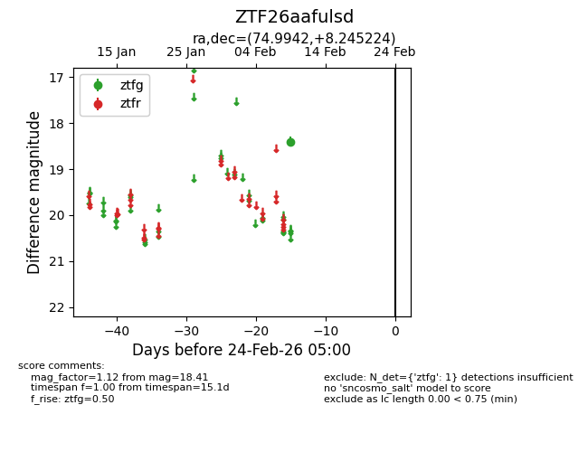
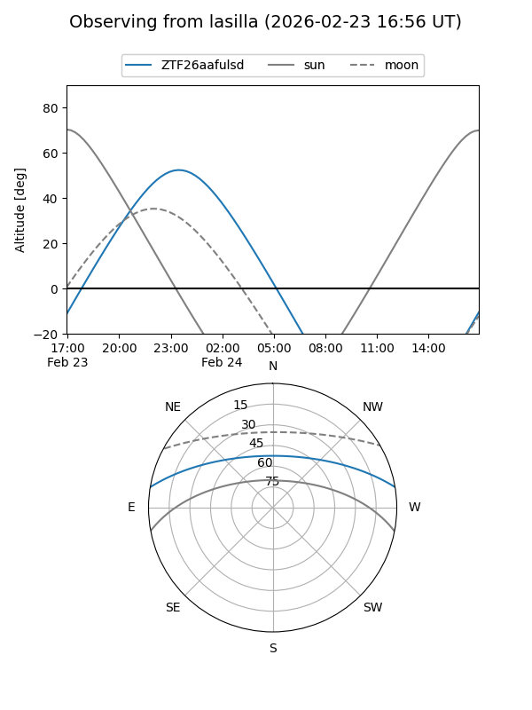
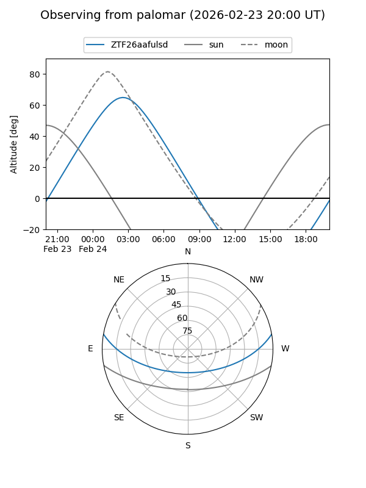

ZTF26aafulsd
Target ZTF26aafulsd at 2026-02-24 09:08
Aliases and brokers:
FINK: link
Lasair: link
ALeRCE: link
alt names
ZTF26aafulsd (ztf,fink_ztf)
Coordinates:
equatorial (ra, dec) = 74.9942,+8.24522
equatorial (HMS+DMS) = 04:59:58.62,+08:14:42.81
galactic (l, b) = (191.7776,-20.26009)
Flags:
Photometry:
last ztfg=18.41
1 ztfg detections
Lightcurve

Visibility


Additional plots